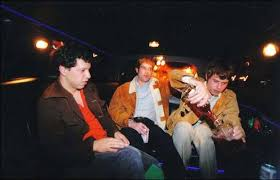
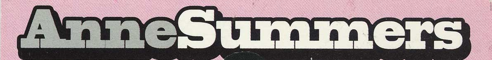
_
Arlington VA · Washington DC
~1993–2000 · Power Pop · Indie Rock
Two full-lengths. Both still streaming. Both still worth your time.
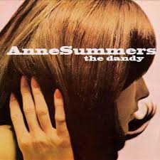
1997Eleven tracks of lo-fi guitar pop. Recorded at Bias Recording (Springfield VA) and Latona Studios (DC). VU drone, Byrds jangle, Costello vocals. Nihilism has never sounded this sunny.
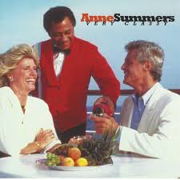
2000Produced by Don Fleming. Cello. Bigger sound. Opens with King of Disaster. Eleven songs, forty minutes, complete devastation delivered politely.
Both albums on Spotify, Apple Music, Tidal. Search Anne Summers for The Dandy. If you have live video from the Black Cat or any DC venue — upload it. This history is incomplete without it.
Co-founder. Maryland. Guitar riffs from VU drone to Byrds jangle. Primary songwriter alongside Boyajy. The band's guitar voice from first rehearsal to last show.
Co-founder. The dual-vocal approach was the whole secret — Costello and McCartney in one room, both writing, both singing, both ending up at a desk job anyway.
The Very Classy drummer. Breathed fire backstage. Reportedly set himself alight at the Black Cat release show climax. Anchored the record's bigger sound.
Original drummer. Played some Dandy tracks before Samuels stepped in. The transition that closed the circle on the classic lineup.
Velvet Monkeys. Teenage Fanclub. Screaming Trees. Produced Very Classy and gave Anne Summers the cleanest sound they ever had — without making them clean.
Anne Summers arrived mid-90s into a Northern Virginia/DC indie ecosystem that included Unrest (Arlington, TeenBeat), Tsunami (also Arlington), and Wingtip Sloat (Falls Church) — and the shadow of the post-hardcore legacy that still defined what "DC music" meant.
They were none of those things. They were a tight power-pop trio with hooks, harmonies, and a very specific self-aware malaise — the mid-90s DC suburbs rendered as 33 minutes of punchy, literate, melodic noise.
The Black Cat was their home. The Post reviewed them twice. Jake Tapper, reportedly, was a regular. They were the best band in every room. You had to be there.
The records made it. The band went to work. Both things are equally true.
Xeroxed, stapled to telephone poles, handed out at the door. The paper trail of a band that played everywhere and left evidence.
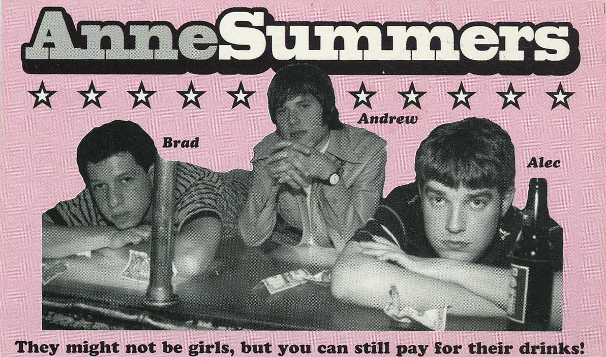
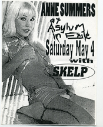
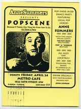
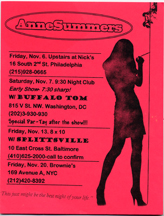
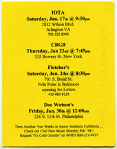
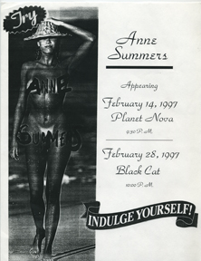
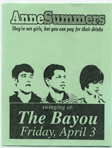
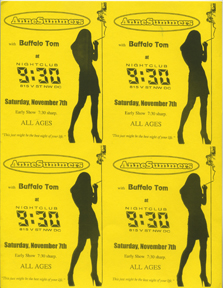
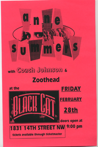
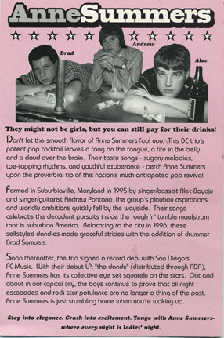
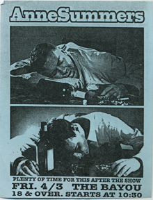
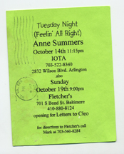
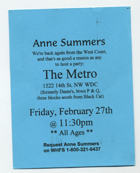
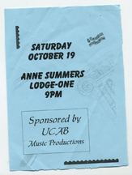
Fletcher's 10/19/97 · IOTA 10/16/01 · Black Cat 9/26/98
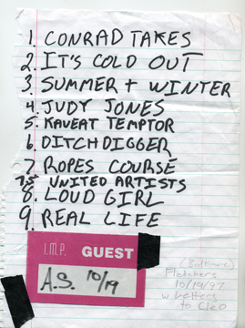
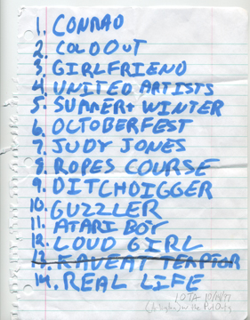
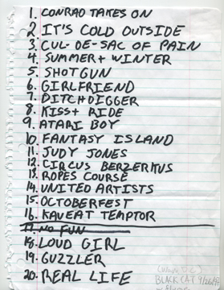